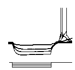
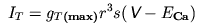
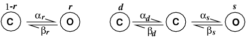
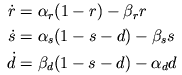
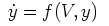
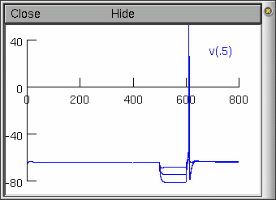

Manual
A NEURON Programming Tutorial - part D
Note: To truly understand what is being done in NMODL one would need a background in differential equations. This tutorial illustrates how someone with an understanding of kinetics and differential equations could create their own channel and use it in NEURON.
For those not familiar with kinetic processes and differential equations, this tutorial will give you an idea of how channels are created but will not give you an understanding of how the variables used in creating the channels are actually derived.
If you simply want to add a channel definition (.mod) file created by someone else to your neuron, skip to section on "NMODL & NEURON" using .mod files.
Introduction
Although our simulated neurons were given a characteristic subthalamic nucleus projection neuron morphology in tutorial part C, they still only contain the default Hodgkin and Huxley types of sodium and potassium ion selective channels. We would like to make our neurons much more electrophysiologically characteristic of subthalamic nucleus neurons. There are many channel types we would want to add, but for the tutorial we will add only one new type.

An important electrophysiological feature of subthalamic neurons is the post hyperpolarising response. When a neuron is hyperpolarised (e.g. by current injection or inhibitory synaptic input), at the end of the hyperpolarisation, a burst of activity is observed in subthalamic projection neurons (see left). This response is mediated by a low threshold calcium selective ion channel, called the T-type calcium channel.The current IT produced from the T-type calcium channels was characterised within the Hodgkin-Huxley framework by Wang et al. (1991):

where gT(max) is the maximum T-type calcium conductance, r is the activation state variable, s is the inactivation state variable, ECa is the reversal potential for calcium and V is the neuron membrane potential.
The state variables r and s are given by the following kinetic systems:

Here "C" refers to a closed state and "O" refers to an open state. The α and β variables are the forward and backward rate constants from one state to another; they are voltage dependent functions specified in Wang et al. (1991). Note that inactivation is a three state kinetic process, with fast (s) and slow (d) components).
The kinetic schemes translate to three differential equations:

We would like to add this channel to our model. Sadly this cannot be done with the programming language hoc that we have used in the previous tutorial parts. Instead we have to learn the Model Description Language (NMODL) provided for defining additional distributed membrane mechanisms such as ion channels and calcium pumps and point processes such as synapses. [Note, in the future it is planned that NMODL descriptions will be replaced by JAVA objects].
This tutorial shows you how to use NMODL to create the T-type channel we need. This should be applicable to other types of voltage-dependent channels too. NMODL is capable of much more, but that is outside the scope of this tutorial; the document Expanding NEURON's Repertoire of Mechanisms with NMODL by Mike Hines and Ted Carnevale contains comprehensive description of how to use NMDOL for different purposes. A shorter version of this document is also available (Hines & Carnevale, 2000).
NMODL
A description of a membrane mechanism in NMODL is a text file divided into a number of blocks. A block begins with a keyword defining the type of block, then an open brace "{", followed by block specific definitions, and finally, the block is ended with a closing brace "}". The best way to learn to program new membrane mechanisms using NMODL is by following examples of already defined mechanisms. There are a number of NMODL examples provided with the NEURON package. Here we will go through, step by step, an example of a new channel mechanism.
We will construct a NMODL file, called CaT.mod to calculate the low threshold calcium channel kinetics. As with hoc files we can use our favourite text editor to create this file.
Before starting
Open a new Notepad document and save it as CaT.mod in the same folder as all the other NEURON files.
The TITLE and UNITS blocks
We start the NMODL file with some standard definitions useful in most channel membrane mechanisms:
TITLE Calcium T channel for Subthalamic Nucleus
UNITS {
(mV) = (millivolt)
(mA) = (milliamp)
}
- The TITLE keyword allows us to identify what this file is describing, though it is not required.
- The UNITS block defines more convenient aliases for the the units that will be used in this file. By default, NMODL understands units in the UNIX units database (see file /usr/share/units.dat or look at the units command on LINUX machines). It uses these units to check that that equations are consistent. In the above example we are telling NMODL that we want to use mV as a shorthand for millivolt and mA as a shorthand for milliamp.
The NEURON block
The NEURON block is the public interface of the mechanism. It tells the hoc interpreter how to refer to the mechanism and what variables it can see or change. The structure of the block is as follows:
NEURON {
SUFFIX suffix
USEION ions... READ vars... WRITE vars...
RANGE var,var,...
GLOBAL var,var,...
}
The first step is to identify this mechanism from all other membrane mechanisms when referencing it from the hoc language. This is done through the SUFFIX statement of the block. Access to all variables in this mechanism from the hoc file is then done using the suffix. For example, we will call this channel mechanism "CaT", so to access variables in the mechanism from hoc we use var_CaT (where var is a variable in this mechanism).
The USEION statement specifies what ions this channel mechanism uses. There are three ions NEURON knows about, na, k, ca, however, others may also be defined via this statement. NEURON can keep track of the intracellular and extracellular concentrations of each ion. (Typically, these are actually concentrations in small shells around either side of the membrane.) Dealing with ions is difficult, because more than one mechanism may affect a particular ion. For example, we may have more than one calcium channel mechanism. Therefore, when dealing with ions use exactly the same name used in all other mechanisms.
The READ modifier lists ionic variables needed in calculating the ionic channel current (usually the equilibrium potential, or concentration). The WRITE modifier lists what ionic variables are calculated in this mechanism (usually the current). In our example we use:
USEION ca READ eca WRITE ica
eca is the equilibrium potential for ion ca, and ica is the calcium current, to be calculated in this mechanism.
You probably expect that since we have just introduced ica, a calcium current, NEURON will automatically adjust the intra- and extracellular calcium concentrations. It doesn't (though it can; the box contains more details.) One way to think about this is that in this tutorial, we have deliberately chosen not to model calcium accumulation adjacent to the membrane, either intracellularly or extracellularly.
Note on how NEURON deals with ions
NEURON does not change the calcium concentrations automatically. To do this, we would need another mechanism defined in an NMODL file that would WRITE cai and/or cao, the intra- and extracellular calcium concentrations. However this mechanism would need to know the total calcium current ica originating from our CaT mechanism and any other mechanisms affecting calcium current. NEURON provides a means of doing this, but it is outside the scope of this tutorial.
The RANGE statement makes the following variables visible to the NEURON interpreter and specifies that they are be functions of position. For example, the maximum channel conductance should be a RANGE variable, since it can be different at different points on a neuron.
The GLOBAL statement specifies variables that are always the same for the mechanism. This mechanism does not have any GLOBAL variables. Our final NEURON block now has the form:
NEURON {
SUFFIX CaT
USEION ca READ eca WRITE ica
RANGE gmax
}
We have called the maximum channel conductance variable gmax.
The PARAMETER block
The PARAMETER block specifies variables that:
- are not changed as a result of the calculations in the mechanism;
- are (generally) constant throughout time; and
- can be changed by the user from the hoc interface or the GUI.
We can see from the equation:
that in calculating this channel current our model will use the voltage v, the maximum conductance we declared in the NEURON block above, gmax and the calcium equilibrium potential, eca. Of these only gmax satisfies the conditions above; v is calculated at every time step by NEURON rather than being specified by the user, and eca may also be calculated at each time step depending on the calcium concentrations. The PARAMETER block is:
PARAMETER {
gmax = 0.002 (mho/cm2)
}
For each parameter, we specify the name of the parameter, its default value and its units (in parentheses).
We change the value of gmax in a segment in which CaT is inserted from hoc as follows:
soma gmax_CaT = 0.001
The ASSIGNED block
The ASSIGNED block declares variables that are either:
- calculated by the mechanism itself or
- computed by NEURON.
Variables that this mechanism will compute are the calcium current ica, and variables for the rate equations ralpha, rbeta, salpha etc. The variables that the mechanism uses that are computed by NEURON are the membrane potential v and the calcium equilibrium potential eca. The ASSIGNED block is:
ASSIGNED {
v (mV)
eca (mV)
ica (mA/cm2)
ralpha (/ms)
rbeta (/ms)
salpha (/ms)
sbeta (/ms)
dalpha (/ms)
dbeta (/ms)
}
Note on equilibrium potentials
As mentioned above eca is calculated by NEURON. How and when it is calculated depends on the particular mechanisms dealing with ions that are inserted in a section. In this tutorial, although there is a calcium current ica, we have deliberately chosen not to represent calcium accumulation adjacent to the membrane, either intracellularly or extracellularly (see the Box: Note on how NEURON deals with ions). So in our case NEURON use a built-in, i.e. "default", eca. But NEURON's default values for eca, ena, and ek are not appropriate for our mammalian subthalamic nucleus. We want to use typical mammalian values like the following (from Johnston & Wu, 1999):
| Na | K | Ca | |||
| inside | outside | inside | outside | inside | outside |
| 10 mM | 145 mM | 140 mM | 5 mM | 2e-4 mM | 2.5 mM |
| ena = 71.5 mV | ek = -89.1 mV | eca = 126.1 mV | |||
where the equilibrium potentials ena, ek, and eca are calculated at 37 degrees Celsius according to the Nernst equation. We will set all of these equilibrium potentials as our model has channels using each of these ion species. These should be set after the channel mechanisms are inserted into a section, and must be set for each section that has channels using that ionic species inserted. In our model, only the soma has such channels. We can modify our SThcell template, adding these equilibrium potential parameter values to the soma block:
soma {
nseg = 1
diam = 18.8
L = 18.8
Ra = 123.0
insert hh
ena = 71.5
ek = -89.1
gnabar_hh=0.25
gl_hh = .0001666
el_hh = -60.0
insert CaT
eca = 126.1
}
Remember, if you insert channels into other sections, you must modify the appropriate equilibrium potentials in that section to make them consistent with the soma section.
The STATE block
The STATE block declares state variables. One type of state variable are the variables that we are trying to solve for in kinetic schemes. There are three state variables in our kinetic channel model, r, s and d. The STATE block is:
STATE {
r s d
}
The heart of the mechanism
We now come to the heart of the mechanism. We wish to calculate the values of the variables r, s and d in order to calculate the calcium current from the above equation. These are given by the three kinetic differential equations:
We must first calculate each of the functions ralpha, rbeta, salpha, sbeta, dalpha and dbeta. These voltage dependent functions are specified by Wang et al.. We can create a PROCEDURE to calculate these functions. This allows us to calculate the equations at any time by simply using our defined procedure. A procedure is defined using the following format:
PROCEDURE name(vars) {
calculations...
}
In our case, we need a procedure that takes the current voltage v and calculates values of the variables ralpha, rbeta etc. We will call our procedure settables. [Note the actual functions are taken from Wang et al. (1991)]
PROCEDURE settables(v (mV)) {
LOCAL bd
ralpha = 1.0/(1.7+exp(-(v+28.2)/13.5))
rbeta = exp(-(v+63.0)/7.8)/(exp(-(v+28.8)/13.1)+1.7)
salpha = exp(-(v+160.3)/17.8)
sbeta = (sqrt(0.25+exp((v+83.5)/6.3))-0.5) *
(exp(-(v+160.3)/17.8))
bd = sqrt(0.25+exp((v+83.5)/6.3))
dalpha = (1.0+exp((v+37.4)/30.0))/(240.0*(0.5+bd))
dbeta = (bd-0.5)*dalpha
}
As these functions will need to be reevaluated at each time step (as the voltage is changing), it is more computationally efficient to create a table of values calculated at closely spaced voltages at the start of a simulation, and use table lookup with linear interpolation based on the current voltage (memory is cheaper than computation). This can be done by simply adding a TABLE line to the procedure. The TABLE command has the form:
TABLE funcs DEPEND vars FROM lowest TO highest WITH steps
Where funcs, are the variables representing the functions to create tables for (e.g. the alpha and beta function variables) and vars are the variables, that if they change value then all tables must be recalculated. In our case, lowest and highest are the lowest and highest values of the voltage we make the tables over, with steps steps between them. Our procedure now looks like:
PROCEDURE settables(v (mV)) {
LOCAL bd
TABLE ralpha, rbeta, salpha, sbeta, dalpha, dbeta
FROM -100 TO 100 WITH 200
ralpha = 1.0/(1.7+exp(-(v+28.2)/13.5))
rbeta = exp(-(v+63.0)/7.8)/(exp(-(v+28.8)/13.1)+1.7)
salpha = exp(-(v+160.3)/17.8)
sbeta = (sqrt(0.25+exp((v+83.5)/6.3))-0.5) *
(exp(-(v+160.3)/17.8))
bd = sqrt(0.25+exp((v+83.5)/6.3))
dalpha = (1.0+exp((v+37.4)/30.0))/(240.0*(0.5+bd))
dbeta = (bd-0.5)*dalpha
}
Now, to calculate all the alpha and beta functions we simply call the procedure settables. The alpha and beta functions are used by our differential equations:
These equations can be directly specified in a DERIVATIVE block. The DERIVATIVE block requires a name, and we will call ours states.
DERIVATIVE states {
settables(v)
r' = ((ralpha*(1-r)) - (rbeta*r))
d' = ((dbeta*(1-s-d)) - (dalpha*d))
s' = ((salpha*(1-s-d)) - (sbeta*s))
}
Each time NEURON calculates the differential equations, the alpha and beta variables must be updated, so the first line calls our procedure settables with the current voltage v. Then each differential equation is specified.
Our BREAKPOINT is the top level mechanism calculation block that simply solves the differential equations and calculates the calcium current.
BREAKPOINT {
SOLVE states METHOD cnexp
ica = gmax*r*r*r*s*(v-eca)
}
The current is calculated directly from the equation:
The SOLVE statement refers to the states defined in our DERIVATIVE block. The METHOD cnexp part of the line tells NEURON to use the "cnexp" method of integration. This method is suitable for mechanisms of the form

where f is linear in y and involves no other states. Hodgkin-Huxley-type equations fall into this category.
The final block we must specify is the INITIAL block. This block is used to set the state variables r, d and s to to their initial values. Usually these are the values of the state variables at equilibrium. The INITIAL block first calls the procedure settables with the present voltage to calculate the values of the alpha and beta functions. These in turn are then used to calculate the initial state variables. The INITIAL block is:
INITIAL {
settables(v)
r = ralpha/(ralpha+rbeta)
s = (salpha*(dbeta+dalpha) - (salpha*dbeta))/
((salpha+sbeta)*(dalpha+dbeta) - (salpha*dbeta))
d = (dbeta*(salpha+sbeta) - (salpha*dbeta))/
((salpha+sbeta)*(dalpha+dbeta) - (salpha*dbeta))
}
Note the values for r, d and s are derived from the differential equations at equilibrium.
Putting it all together
The final and complete NMODL specification for the low threshold calcium T-type channel is given in the file CaT.mod and is listed below.
TITLE Calcium T channel for Subthalamic Nucleus
UNITS {
(mV) = (millivolt)
(mA) = (milliamp)
}
NEURON {
SUFFIX CaT
USEION ca READ eca WRITE ica
RANGE gmax
}
PARAMETER {
gmax = 0.002 (mho/cm2)
}
ASSIGNED {
v (mV)
eca (mV)
ica (mA/cm2)
ralpha (/ms)
rbeta (/ms)
salpha (/ms)
sbeta (/ms)
dalpha (/ms)
dbeta (/ms)
}
STATE {
r s d
}
BREAKPOINT {
SOLVE states METHOD cnexp
ica = gmax*r*r*r*s*(v-eca)
}
INITIAL {
settables(v)
r = ralpha/(ralpha+rbeta)
s = (salpha*(dbeta+dalpha) - (salpha*dbeta))/
((salpha+sbeta)*(dalpha+dbeta) - (salpha*dbeta))
d = (dbeta*(salpha+sbeta) - (salpha*dbeta))/
((salpha+sbeta)*(dalpha+dbeta) - (salpha*dbeta))
}
DERIVATIVE states {
settables(v)
r' = ((ralpha*(1-r)) - (rbeta*r))
d' = ((dbeta*(1-s-d)) - (dalpha*d))
s' = ((salpha*(1-s-d)) - (sbeta*s))
}
UNITSOFF
PROCEDURE settables(v (mV)) {
LOCAL bd
TABLE ralpha, rbeta, salpha, sbeta, dalpha, dbeta
FROM -100 TO 100 WITH 200
ralpha = 1.0/(1.7+exp(-(v+28.2)/13.5))
rbeta = exp(-(v+63.0)/7.8)/(exp(-(v+28.8)/13.1)+1.7)
salpha = exp(-(v+160.3)/17.8)
sbeta = (sqrt(0.25+exp((v+83.5)/6.3))-0.5) *
(exp(-(v+160.3)/17.8))
bd = sqrt(0.25+exp((v+83.5)/6.3))
dalpha = (1.0+exp((v+37.4)/30.0))/(240.0*(0.5+bd))
dbeta = (bd-0.5)*dalpha
}
UNITSON
One final note, you may notice the commands UNITSON and UNITSOFF in the file. These activate the units checking (e.g. mV, mA etc.) and deactivate it respectively.
NMODL and NEURON
A membrane mechanism description using NMODL is laid out in a text file. The NEURON interpreter cannot read this file directly as it can with hoc files. Instead, the NMODL file has to be compiled into a form that NEURON can use. Suppose that we have created a file CaT.mod containing our description of the T-type calcium channel in NMODL. How you incorporate this new mechanism into NEURON depends on what operating system you are using.
- UNIX or LINUX users:
- UNIX and LINUX users should just change to the directory that contains
the CaT.mod file, and there type the command
nrnivmodlat the operating system prompt. Under Linux on a PC with an Intel-compatible CPU, this creates a new NEURON executable called i386/special (the i386 subdirectory will be created automatically if it does not already exist) whose library of mechanisms includes our T current. To launch this new executable and have it load your model file, just typenrngui sthD.hocat the OS prompt in the directory that contains i386. sthD.hoc is the file that contains our model specification, and it is nearly identical to sthC3.hoc from tutorial part C. - MSWin users:
- MSWin users should just launch
Start / Programs / Neuron / mknrndllThis brings up a directory browser that can be used to navigate to the directory that contains the CaT.mod file. When you get to the proper directory, click on the button labelled "Make nrnmech.dll". This compiles all the mod files in this directory and creates a file called nrnmech.dll that contains the new compiled mechanisms. nrnmech.dll will be automatically loaded when you double click on a hoc file in this directory. - MacOS users:
- MacOS users only need to drag the directory that contains CaT.mod and drop it onto the mknrndll icon. This produces a nrnmech.dll file that is automatically loaded when you double click on any hoc file in the same directory.
Note, sthD.hoc differs from sthC3.hoc from tutorial part C in that our soma definition in the template now inserts our newly defined CaT membrane mechanism:
soma {
nseg = 1
diam = 18.8
L = 18.8
Ra = 123.0
insert hh
gnabar_hh=0.25
gl_hh = .0001666
el_hh = -60.0
insert CaT
}
Why do we have to go through this cumbersome procedure every time we want to create or modify a channel? The reason is that membrane mechanisms are used on every time step, and therefore need to be efficient. Converting the NMODL file to C-code and then compiling this into a new NEURON program or library (which is what nrnivmodl and mknrndll do) leads to more efficient simulation.
Now if we inject a hyperpolarising current in one of our neurons, we now observe a post-hyperpolarising T-type response:

With current injections at -0.1, -0.2, and -0.3 nA.
Note: The action potential is unrealistic for mammalian subthalamic cells (it is still based on our HH squid axon channels). We leave it to the reader to go on and develop channels to underlie an action potential more characteristic of the mammalian subthalamic projection neuron.
In part E of this tutorial, we will look at ways of getting data out of neuron, and methods of speeding up simulations.
References
Hines, M. L. and Carnevale, N. T. (2000) "Expanding NEURON's repertoire of mechanisms with NMODL" Neural Computation 12: 839-851
Johnston, D. and Wu, S. (1995) Foundations of Cellular Neurophysiology. MIT Press, Cambridge, Massachusetts.
Wang, X., Rinzel, J. and Rogawski, M. (1992) "A model of the T--type calcium current and the low threshold spike in thalamic neurons". J. Neurophys. 66: 839-850
Andrew Gillies (andrew@anc.ed.ac.uk)
David Sterratt (dcs@anc.ed.ac.uk)
with the assistance of Ted Carnevale and Michael Hines
Last modified on 21 January 2004 at 11:39
Acknowledgements
Last modified on 10/29/04 by
Albert Borroni, CS/Neuoriscience Oberlin College (aborroni@oberlin.edu)
based on tutorial written by
Andrew Gillies (andrew@anc.ed.ac.uk)
David Sterratt (dcs@anc.ed.ac.uk)
which is originally based on the tutorials by Kevin E. Martin
with the assistance of Ted Carnevale and Michael Hines
25 February 2010 at 16:17